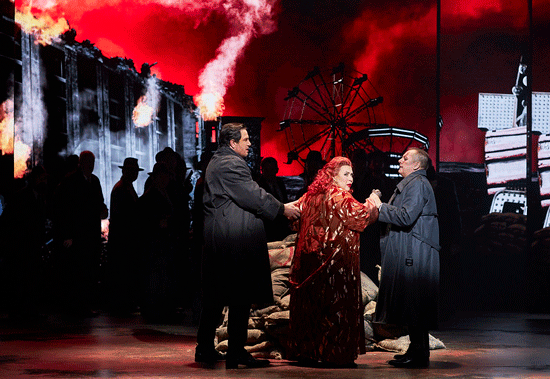

July 18, 2022
Il Trovatore: an opera review by Murray Dahm
Russian baritone Maxim Aniskin as the Conte de Luna sang reliably all night, I especially enjoyed the top of his voice. His “Il balen del suo sorriso” was the first real sign of legato on the night and it was sung with great line. He was, however, hampered by having to carry a sword in his left hand for most of the night (there was no scabbard). This reduced his gestures to a single, often claw-like, hand which became a little one-dimensional. He was also not as oily and villainous as he could have been despite all his mafioso trappings and his stalking of his love, Leonora.